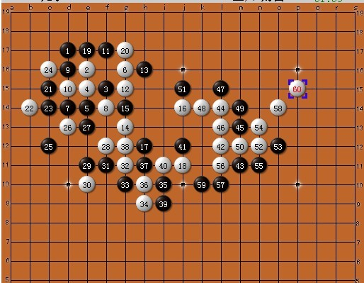

分析的一盘棋
#1 分析的一盘棋 作者：蓝天蓝 发表时间：2011-6-16 12:11:27
一盘棋的分析
总谱

一手交换无禁规则，一般的正常开局，只是白8的时候我想这样的走法，如下图：
参考图，这样以后白棋可以选择的点也不少，比如 g17、g15、c15、c14等等
参考图，这样白棋也是一样，可以选择g15 、c15、c16、e113、f17，这些只是我个人的想法
实战的白8做显招（显招就是下一步可以双活三的做棋），黑9跳活三，防守白棋的双活三点
下面就是正常应对了
白14 跳活三，黑15 这样想了，上面反活三，这样以后白16 防守，黑13和15 怎么活三，白棋 都比较好，而且还破坏了自己的活二，如图
黑17 直接活三攻击，白18 冲四，再防守就形成了43杀，黑21 还要防守，，就丢失了先手，这样白棋的外势就强了，所以15 就防守中间了
实战图
实战的白12 和14 都是正常应对，我也是这样想的，16和18 是出乎我的意料之外的
现在分析一下这个白16和白18 ，还有黑17的意图
16是为了 控制黑棋左上的发展，拓展自己的空间，为了让黑棋的攻击能力分散， 还可以跟斜线的眠三连接，
黑 17 切断了 16 跟斜线眠三的连接，破坏了 16 的意图，还可以跟左上和左边连接，在后面的实战体现出来了，17是藏招
#2 Re:分析的一盘棋 作者：玩不过就跑 发表时间：2011-6-16 13:41:29
第一次看一首交换的对局，感觉还不错
#3 Re:分析的一盘棋 作者：游戏人间 发表时间：2011-6-16 15:17:33
白4太弱。。。体现出棋手的空间感太弱。。。#4 Re:Re:分析的一盘棋 作者：蓝天蓝 发表时间：2011-6-16 16:41:39
引用：那白4 走哪里强呢，请指教一下，O(∩_∩)O谢谢
原文由 游戏人间 发表于 2011-6-16 15:17:33 :
白4太弱。。。体现出棋手的空间感太弱。。。
#5 Re:分析的一盘棋 作者：游戏人间 发表时间：2011-6-16 20:42:21
当然是走在8的位置或者12的位置。空间感啊。。。。。
［ 被感动的人 于 2011-6-21 22:08:48 时花20金币送鲜花一朵］
#6 Re:分析的一盘棋 作者：蓝天蓝 发表时间：2011-6-18 7:04:29
O(∩_∩)O谢谢指教